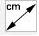
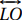

4.2 Circunferências em Triângulos utilizando o Geogebra
Nesta seção é pressuposto que o leitor conheça os conceitos básicos de geometria plana, além da utilização das ferramentas básicas disponíveis no software Geogebra.
Ao longo deste trabalho, foi mostrada a existência de certamente 12 e possivelmente 15 circunferências associadas a um triângulo. Possivelmente porque o Círculo de Apolônio (Seção 3.3) não existe se o pé da bissetriz interna coincidir com o ponto médio de um lado do triângulo, o que ocorre em um lado do triângulo isósceles e nos três lados do triângulo equilátero.
De acordo com a Definição 2.1, é suficiente e necessário verificar a existência de um ponto central e uma distância determinada para que exista uma circunferência bem definida. Este é o principal argumento utilizado nesta seção, ocorrendo também a referência aos respectivos teoremas e corolários que fundamentam as afirmativas.
Nas ilustrações que seguem, o triângulo utilizado foi o escaleno e ele é citado como sendo um triângulo qualquer ou simplesmente um triângulo ΔABC, mas o princípio se estende aos triângulos isósceles e aos equiláteros.
A primeira circunferência ilustrada é a circunferência circunscrita, veja Subseção 2.3.2.
Tome um triângulo qualquer e trace as mediatrizes em pelo menos dois lados do triângulo. Sabemos que a interseção destas mediatrizes é um ponto chamado de Circuncentro, denotado por O. Com centro neste ponto, tracemos a circunferência circunscrita ao triângulo.
Pela ferramenta de MEDIR  do Geogebra podemos comprovar que as distâncias entre o circuncentro e cada um dos vértices é a mesma.
A segunda circunferência ilustrada é a circunferência inscrita, conforme apresentada na Subseção 2.3.4.
Tome um triângulo qualquer e trace as bissetrizes internas em pelo menos dois vértices do triângulo. Sabemos que a interseção destas bissetrizes é um ponto chamado de Incentro, denotado por I. A partir deste ponto definimos os pés de perpendiculares Ta, Tb e Tc, respectivamente, sobre os lados BC, AC e AB. Por fim, tracemos a circunferência inscrita, com centro em I e que tangencia os três lados do triângulo nos pontos Ta, Tb e Tc.
Usando também a ferramenta de medir do Geogebra podemos comprovar que as distâncias entre o incentro e cada um dos pontos de tangência é a mesma. Por possuir esta característica, a circunferência inscrita é uma circunferência tritangente.
A seguir, vamos verificar em um triângulo a associação com outras três circunferências tritangentes, porém, localizadas no exterior do triângulo e, por este motivo, chamadas de circunferências ex-inscritas (consulte a Definição 3.3 (b).
Tomemos um triângulo ΔABC qualquer e dois de seus vértices, digamos B e C. Tracemos a partir deles as bissetrizes externas. É notável que as bissetrizes externas encontram-se em um ponto, denotado por Ia. Agora tracemos o prolongamento dos lados AB e AC. Determinemos o pé da perpendicular do ponto Ia sobre estes prolongamentos e também sobre o lado BC, denotados, respectivamente, por E, F e G. Finalmente, tracemos a circunferência de centro Ia e raio definido pela distância entre Ia e qualquer um dos pés de perpendicular determinados.
Usando a ferramenta de medição do software, é possível comprovar que as distâncias do ponto Ia até os pés de perpendicular E, F e G são iguais. Portanto, esta circunferência é tritangente, pois tangencia o lado BC e os prolongamentos dos demais lados do triângulo. Analogamente é possível traçar as circunferências exinscritas relativas aos lados AC e AB.
Um triângulo qualquer ΔABC possui, associado a ele, outras três circunferências tais que contêm o incentro I e dois dos vértices. O centro destas circunferências é o ponto médio entre o incentro e um centro de uma circunferência ex-inscrita. Além disso, esse centro é ponto da circunferência circunscrita (veja Corolário 3.26).
Tomemos o incentro I de um triângulo ΔABC e o centro Ia da circunferência ex-inscrita relativa ao lado BC. Tracemos o ponto médio entre eles e chamemos de ponto K.
Utilizando a ferramenta de medição do Geogebra podemos confirmar que as distâncias KI, KB, KC e KIa são iguais, portanto K é centro de uma circunferência que contém os pontos I, B, C e Ia.
No mesmo triângulo, determinemos o centro O da circunferência circunscrita. Com a mesma ferramenta de medição, podemos verificar que as distâncias OA, OB, OC e OK são iguais, portanto K pertence à circunferência circunscrita.
Analogamente podemos obter outras duas circunferências se tomarmos o incentro I juntamente com o centro Ib (ou o centro Ic) da circunferência ex-inscrita relativa ao lado AC (ou ao lado AB), determinando o ponto L (ou M).
A partir dos pontos K, L e M, podemos verificar a existência de outras três circunferências associadas ao mesmo triângulo ΔABC, tais que contenham dois do vértices do triângulo e seus respectivos centros da circunferência ex-inscrita. Os centros destas circunferências são os pontos K', L' ou M' obtidos pela interseção da retas ,  ou com a circunferência circunscrita ao triângulo ΔABC, respectivamente. Além disso, K', L' e M' são pontos médios do segmento IbIc, IaIc e IaIb, respectivamente.
Tomemos o ponto K'. Utilizando a ferramenta de medição do Geogebra podemos verificar que as distâncias K'Ic, K'Ib, K'B e K'C são iguais, portanto K' é centro da circunferência que contém os pontos Ic, Ib, B e C. Também podemos perceber que o segmento IcIb é um diâmetro, pois Ic, K' e Ib são colineares - uma vez que estão na bissetriz externa do vértice A. Portanto, K' é ponto médio do segmento IcIb.
Analogamente as demais circunferências podem ser obtidas se tomarmos os pontos L' e M'.
Até o momento, contamos onze circunferências associadas ao triângulo ΔABC. A décima segunda circunferência, não que esta ordenação seja importante, é a Circunferência de Nove Pontos (Veja detalhes na Seção 2.5).
Tomemos um triângulo ΔABC qualquer, seu circuncentro O e seu ortocentro Q. Vamos determinar os pontos médios Ma, Mb e Mc, respectivamente, dos lados BC, AC e AB. Determinemos também os pés das alturas H, R e S, relativos aos vértices, respectivamente, A, B e C. Os pontos médios entre o ortocentro e os vértices são chamados de pontos de Euler. Sejam Ea, Eb e Ec tais pontos, relativos, respectivamente aos vértices A, B e C. Por fim, vamos tomar S ponto médio entre Q e O.
Pelo Geogebra podemos verificar que as distâncias SEa, SEb, SEc, SMa, SMb, SMc, SH, SR e SJ são iguais, portanto S é centro de uma circunferência que contém os nove pontos: Ea, Eb, Ec, Ma, Mb, Mc, H, R e J.
As próximas circunferências associadas ao triângulo têm sua existência dependente do seu tipo, ou melhor, se o triângulo é equilátero, isósceles ou escaleno. Tais circunferências são de Apolônio, conforme foram apresentadas na Seção 3.3 e esta observação é devida ao fato de que tal circunferência não existe se a razão de proporcionalidade for igual a 1 (Corolário 3.17), portanto consideremos o caso em que o triângulo ΔABC é escaleno.
Dessa forma, pelo vértice B determinemos M, o pé da bissetriz interna. Utilizando o Teorema 3.16 sobre o lado AC, temos N o conjugado harmônico de M. Uma vez que MN é diâmetro da circunferência de Apolônio, podemos verificar que o triângulo ΔMBN é retângulo em B, portanto, B pertence à esta circunferência.
Analogamente podemos obter outras duas circunferências relativas aos demais vértices.
Tópico Anterior Recomendado: Vídeos e Demonstrações